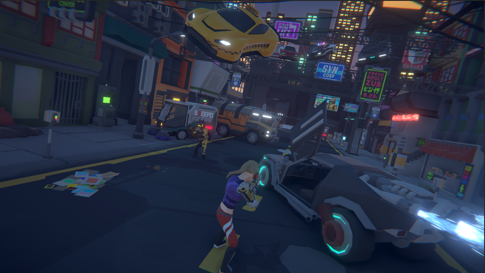
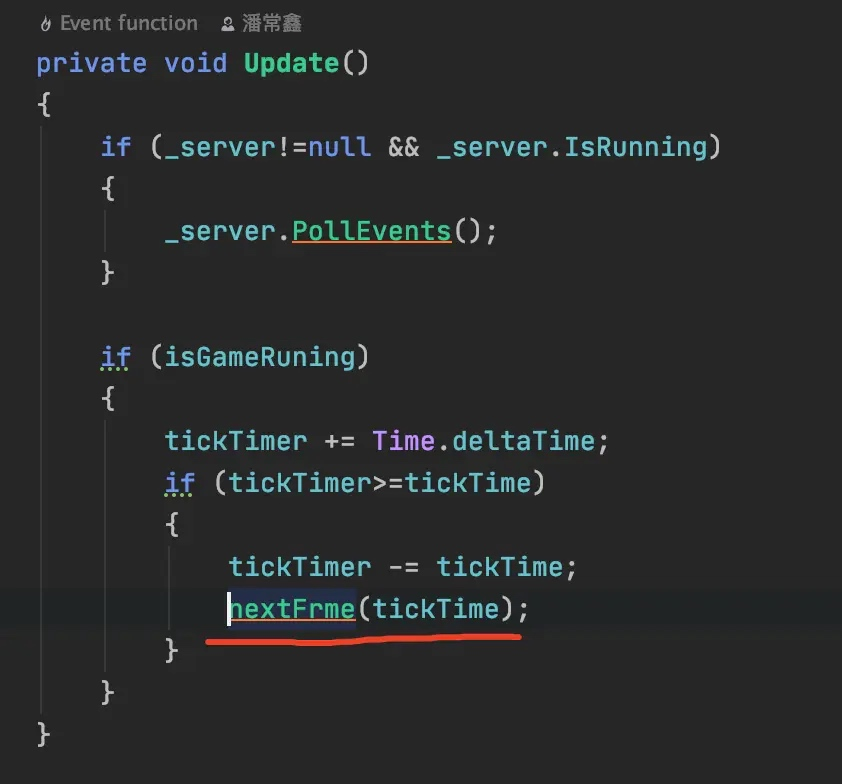
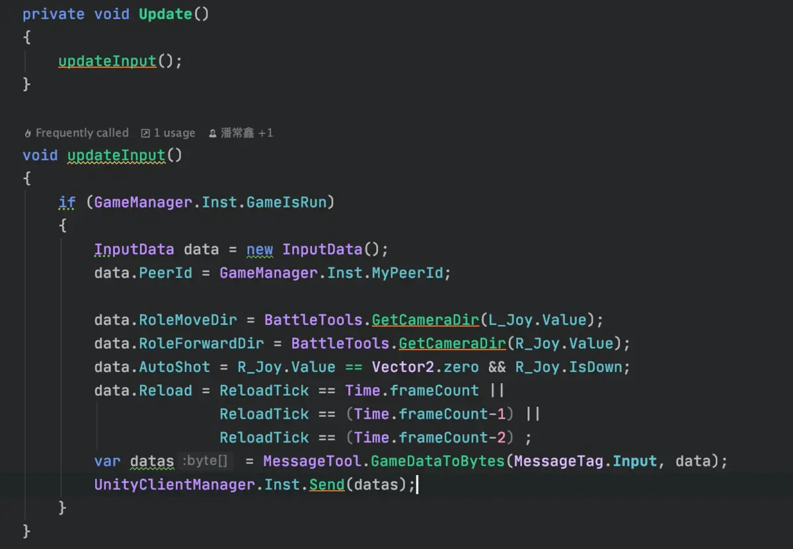
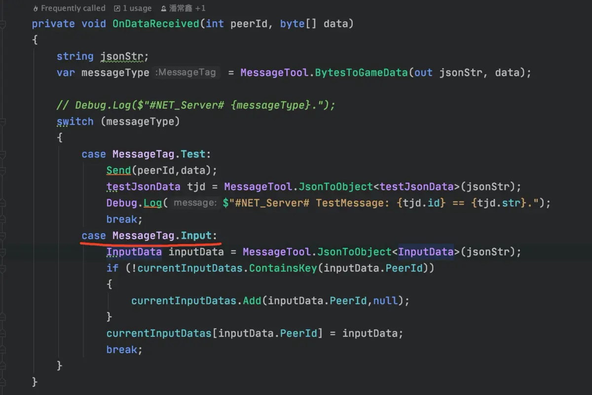
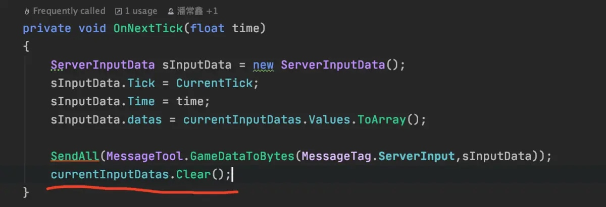
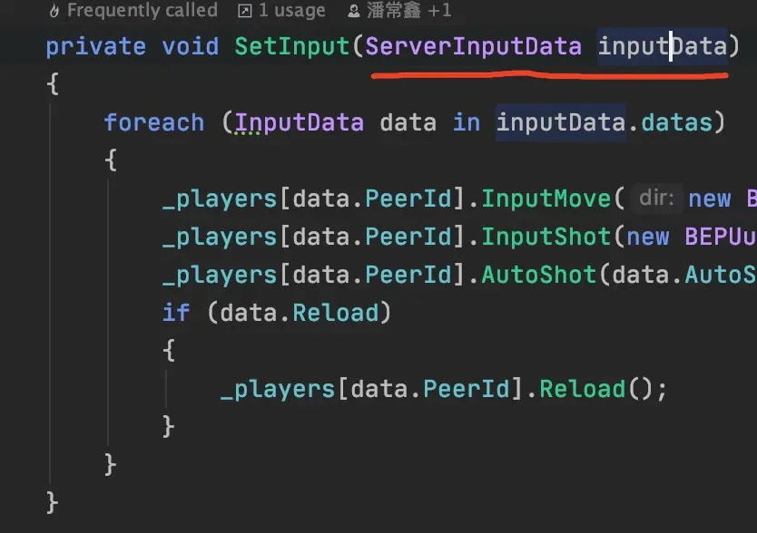
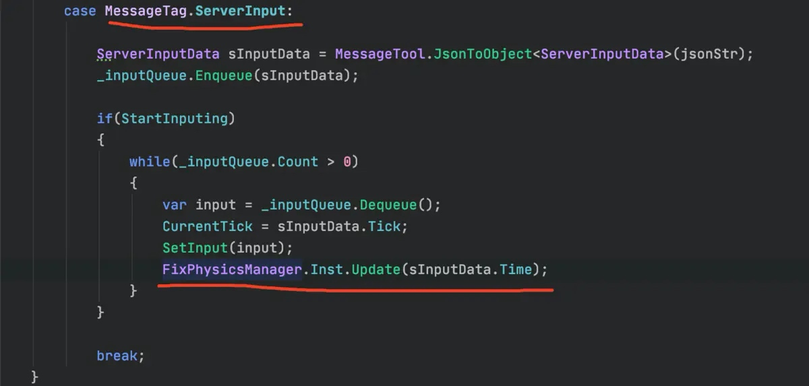
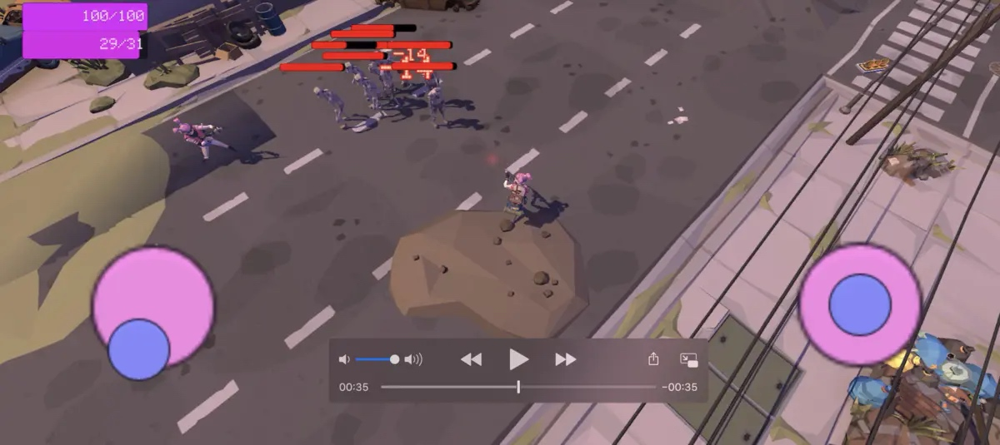
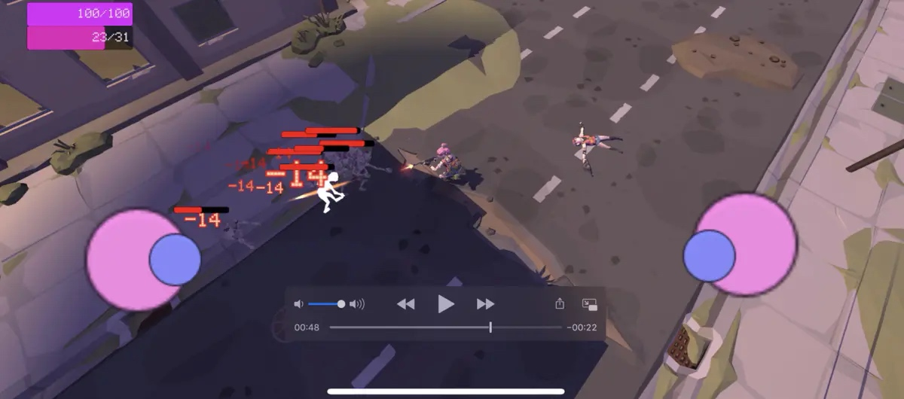

游戏同步主要方向是 状态同步和帧同步。
状态同步
状态同步简单来说就是有一个权威服务器运行着一个没有图形界面的客户端，然后服务器收集所有人的操作数据 计算后再把所有人的关键数据广播给所有人，玩家的客户端只是服务器的一个展示。
缺点是有些情况下同步数据量会很大 因为计算全在服务器所以可能压力会比较大。
帧同步
帧同步中的每一个客户端都是要计算所有数据，服务器只需要转发彼此的操作即可。
帧同步的同步过程：
1.收集所有人的输入，广播给所有人。
2.客户端接收到所有人的输入，客户端本地开始根据输入计算得到游戏结果。
优点 服务器压力小，同步的数据量也很小相对应的可以有更低的延迟和带宽占用，可以直接没有服务器。天生支持录像。
缺点 反作弊难度较大，所有数据都在客户端本地。
在Unity中实现帧同步的注意事项
如果要做帧同步 就必须保证所有客户端再执行相同操作的情况下的结果必须百分百一样，这样我们就不可以使用Unity自带的物理引擎。（亲测 会不同步）
因为不同cpu和操作系统可能float的精度也不同 所以也要避免使用float。（虽然说float有固定标准的，按理来说现在不同平台已经都一样了，但是谨慎起见我还是没用float）
帧同步的核心逻辑也不可以写在Unity脚本的生命周期里 例如Update
帧同步的大致实现原理
首先要区分 逻辑帧和渲染帧。
我们同步的是逻辑帧，所有位移和伤害判定什么的也都是在逻辑帧中，渲染帧中做平滑处理。
Unity中的帧就可以当作是渲染帧。 每次Update就是一个渲染帧，每次FixedUpdate就可以当作是逻辑帧。 渲染帧是没有固定间隔的 性能高刷的就快间隔就短。而逻辑帧是必须固定间隔的。
我两台手机要创建房间进行游戏。
首先手机A点击创建房间，手机A启动服务器，不停的把自己的IP和端口号 以及房间信息(人数，地图，模式。。。等) UDP局域网广播给一个固定端口。 其他手机客户端固定监听这个端口，收到房间信息的广播就在UI界面中显示。
广播房间之后等待其他客户端链接进来，房间满员之后 所有人开始加载地图。
服务器收到所有人加载完毕消息之后，服务器开始循环记时 服务器来驱动逻辑帧。比如 1秒20逻辑帧 就是0.05秒驱动一帧，把收到的客户端输入广播给所有人。（服务器的主要职责就是定时转发输入）。

客户端在服务器开始计时之后 在每一个Unity渲染帧中都把自己的输入发送到服务器，服务器每一个逻辑帧按照最后一次收到的输入广播给所有人。
客户端发送Input数据

服务器接收Input数据

服务器广播Input消息

客户端自己本身不进行逻辑帧计时 收到一个服务器发来的逻辑帧，先给所有角色设置input 然后再客户端本地就按照固定的时间间隔更新物理 驱动逻辑帧(比如1秒20逻辑帧 就是每次更新物理0.05秒)


然后物理更新的时候 自己用事件管理器广播一下PhysicsUpdate事件 其他地方监听物理更新事件。写核心逻辑的地方 用物理更新的Update代替Unity的Update 就可以像写单机游戏一样做帧同步游戏了。
上面的例子中 服务器的那台机器 如果渲染帧卡了一秒 而逻辑帧1秒20帧 ，那么就直接一个渲染帧中调用20次逻辑帧 追赶上进度。 如果服务器卡住了 所有人也都会同步暂停。 如果你有需要 也可以做主机迁移 随时接替原来的主机 防止房主掉线 大家一起掉线。
最终效果


预测回滚
无论帧同步还是状态同步理论上来说都要做预测回滚，状态同步做这个还好做一点。
预测回滚基本就是按照上一次的操作客户端自动多模拟一帧或者几帧 来抵消网络延迟的感觉，但是如果预测结果和之后真实发生的结果不符的时候 就需要回滚客户端到正常的结果上 然后再次预测。 （如果一个人在游戏里 反复左右移动 比如CS里对枪时 疯狂ADADADADAD左右移动 这种情况下 如果有客户端有预测回滚 就会疯狂的预测错误而回滚 客户端也会增加额外的计算压力）
预测回滚因为我自己做的效果很不好 大概如下图一样，所以我就不讲具体怎么做了。
（英雄联盟的预测回滚做的也不咋样，设置里面有个预测选项默认是关闭的 手动勾选打开之后 就算网络正常效果也跟下图一样。）
预测回滚的方案很多 并不是只有一种，像《战地3》的预测回滚就特别魔性 你如果击中敌人了 但是因为延迟导致服务器判定没击中，但是你客户端已经提示击中了 再对其他人影响不大的情况下 它会让其他所有玩家和服务器陪着他一块回滚 让子弹打中那个人。。。。 （难道这就是我快速躲进掩体里之后还被打死的原因？）。
帧同步的作弊检查
游戏过程中检测
玩家每一逻辑帧执行结束之后 把所有角色的关键数据加密为MD5 上传服务器，服务器进行比对。如果是所有人上传上来的MD5都一样 说明所有人的游戏结果都是同步的，如果有人修改了血量那么就会造成游戏不同步 自己的MD5和其他人的不一样，服务器可以强行纠正它 或者 踢掉它。
事后检测
游戏结束之后上传整场比赛左右的操作数据，服务器开一个客户端 一瞬间跑完所有操作所有帧 看最终的结果与客户端上报上来结果是否一致，如果不一致肯定有人作弊了。
不容易检测的作弊
像透视 自瞄这种 本质上没有改变游戏数据的作弊 就不太容易检测。
本文由 PCX
创作，采用 知识共享署名4.0 国际许可协议进行许可
本站文章除注明转载/出处外，均为本站原创或翻译，转载前请务必署名
最后编辑时间为: 2021-03-26T01:02:44+08:00